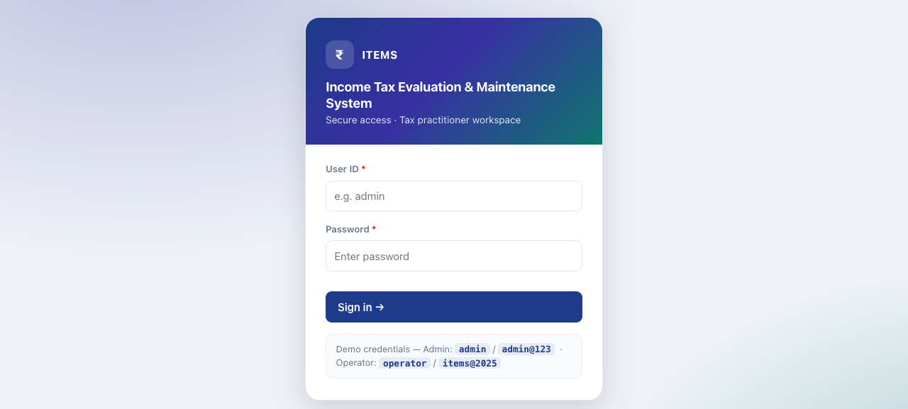
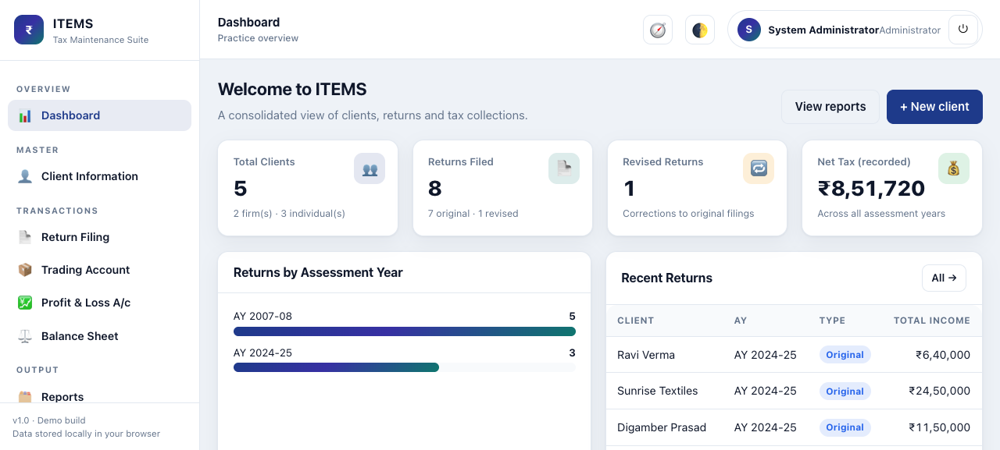
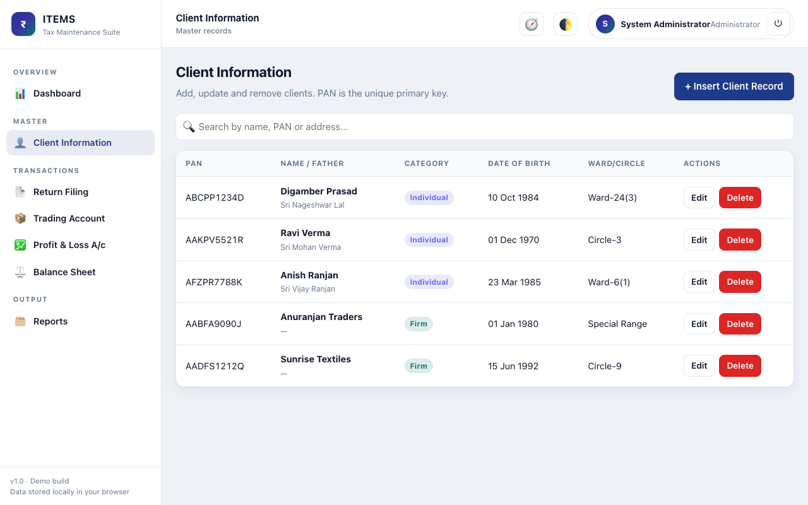
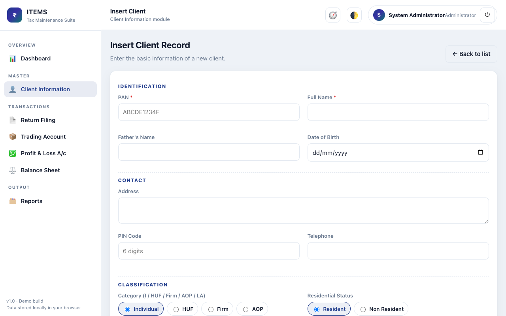
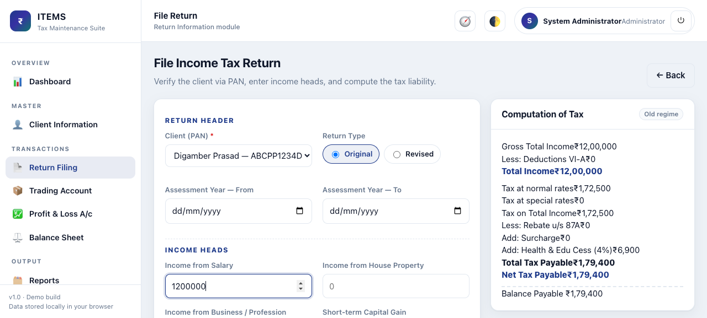
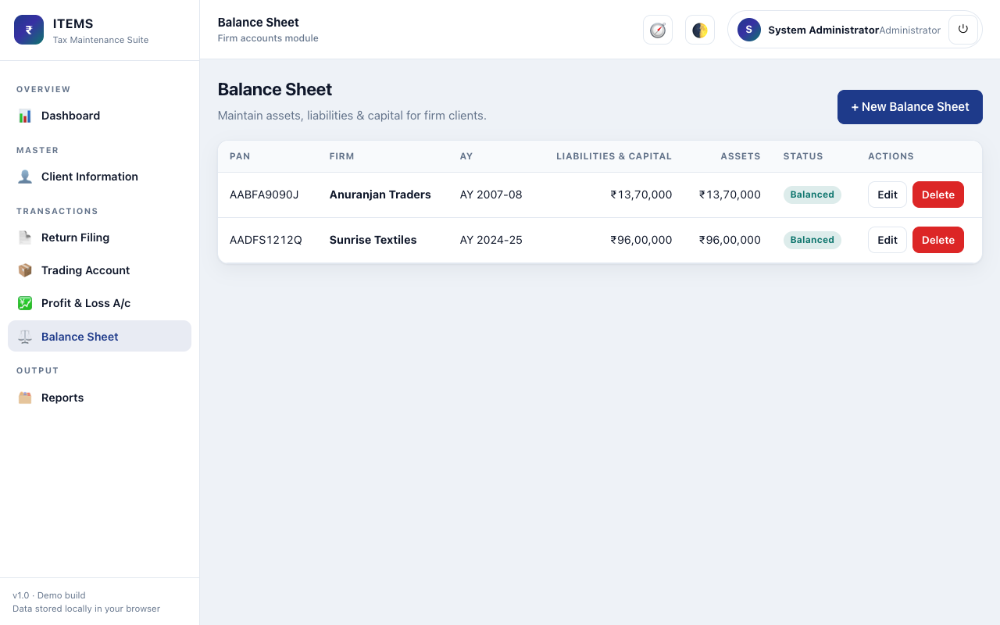
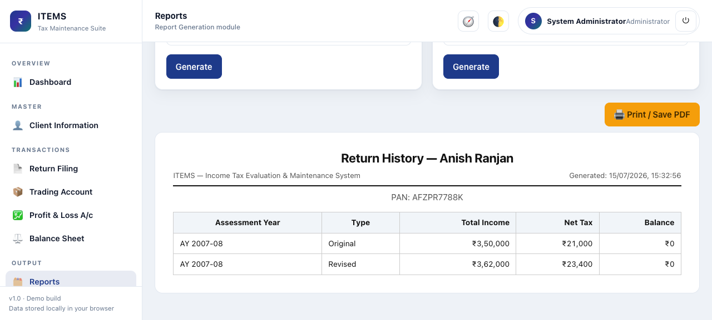
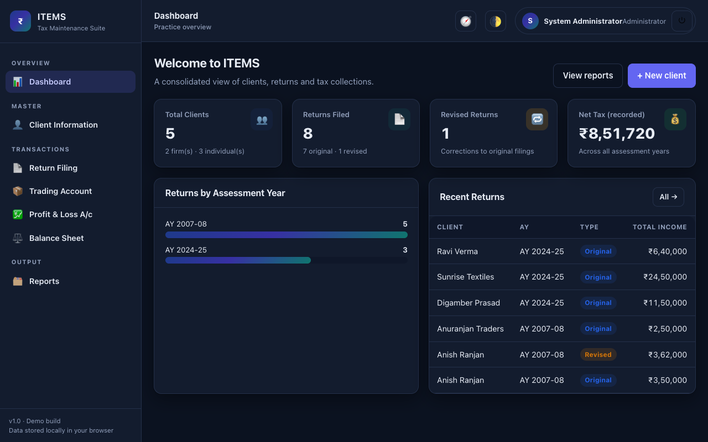
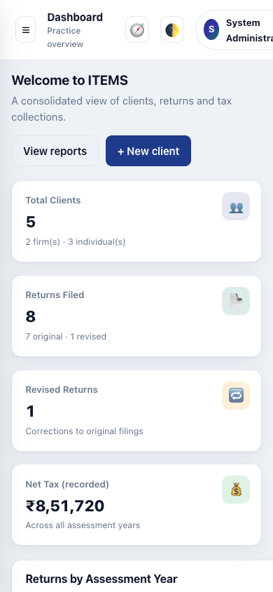

1. Contents
2. What is ITEMS?
3. Objectives
4. How to access & sign in
5. Dashboard
6. Client Information module
7. Return Filing & tax computation
8. Firm accounts (Trading / P&L / Balance Sheet)
9. Reports
10. Works on any device
11. Security
12. Running the VB.NET + Oracle build
13. Quick reference
ITEMS — the Income Tax Evaluation & Maintenance System — is application software that implements the core work of an income-tax practice. It replaces manual registers with a single, secure, computerised system that keeps client records, files original and revised income-tax returns, maintains firm accounts, and generates statutory reports.
Open the live link in any browser — no installation is needed:
https://ankitgupta1729.github.io/items-income-tax-system/
Sign in with one of the demo accounts:
| User ID | Password | Role |
|---|---|---|
admin | admin@123 | Administrator |
operator | items@2025 | Operator |

Figure 1 — The secure login screen. Access to every module is protected.
After signing in you land on the dashboard — a live overview of the practice: total clients, returns filed, revised returns, and net tax recorded, plus a chart of returns by assessment year and a list of recent returns.

Figure 2 — Dashboard with key metrics and recent activity.
This is the master module. It maintains the basic information of each client — PAN, name, father's name, date of birth, address, category and ward/circle — and is responsible for adding, updating and deleting each client's record.
Click + Insert Client Record, fill the form, and Save. The PAN is validated
(format ABCDE1234F) and used as the unique primary key. Deleting a client also removes
all of that client's linked returns and firm accounts.

Figure 3 — Client list with instant search, category badges and row actions.

Figure 4 — Client entry form grouped into Identification, Contact and Classification.
The Return module files the Original return for a client and assessment year, and lets you file a Revised return to correct mistakes. The system enforces the rule that a revised return can only be filed if an original return already exists for that year.

Figure 5 — Return form with the live tax-computation panel on the right.
When a client's category is Firm, three additional modules become relevant. Each has two sides that are totalled automatically, and the system shows whether they balance.

Figure 6 — Balance Sheet records with automatic totals and a Balanced/Δ status.
The Report Generation module produces the statutory reports defined in the requirements. Generate a report, then use your browser's Print (Ctrl/Cmd+P) to save it as a PDF for the client file.

Figure 7 — A generated return-history report, ready to print or save as PDF.
The interface is fully responsive and includes a polished light and dark theme, so the team gets a great experience whether on a laptop, tablet or mobile phone.

Figure 8 — Dark theme.

Figure 9 — Mobile layout.
The production system is ASP.NET Web Forms (VB.NET) on Oracle. To run it:
database/ in order (01 → 04) to create the schema, seed data, audit triggers and report views.src/ITEMS/Web.config.src/ITEMS.sln in Visual Studio, restore the Oracle.ManagedDataAccess NuGet package, and run (F5) — or host on IIS / Oracle Cloud.Full step-by-step instructions are in the project README.md.
| Task | Where |
|---|---|
| Add a client | Client Information → + Insert Client Record |
| File an original return | Return Filing → + File New Return → Original |
| File a revised return | Return Filing → + File New Return → Revised |
| Maintain firm accounts | Trading Account / Profit & Loss A/c / Balance Sheet |
| Generate a report | Reports → choose report → Generate → Print/Save PDF |
| Guided tour | Top bar → 🧭 |
| Light / dark | Top bar → 🌓 |
ITEMS — Income Tax Evaluation & Maintenance System · Team demo guide · v1.0